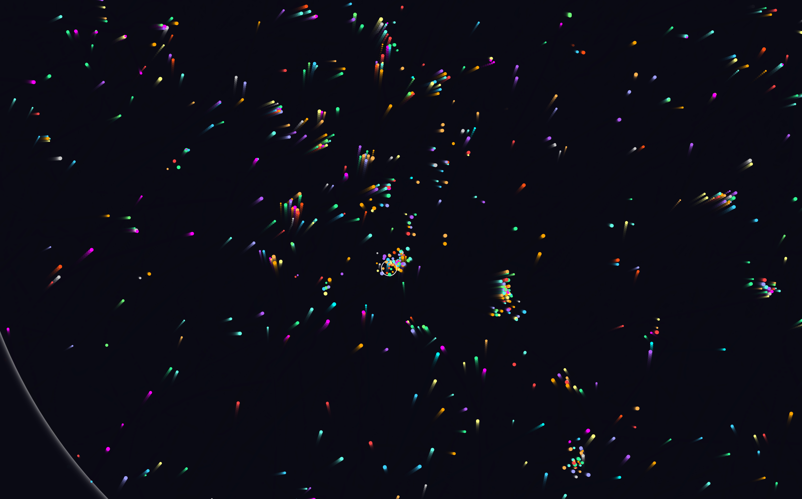
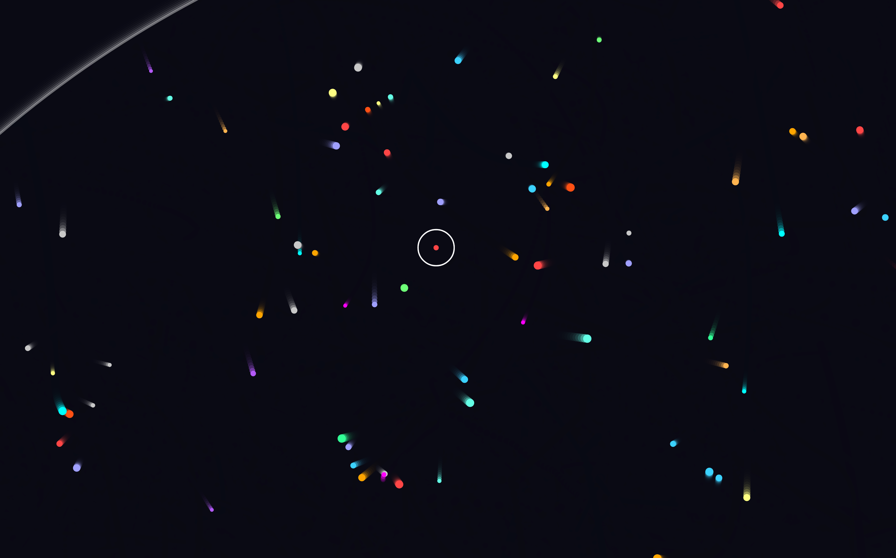
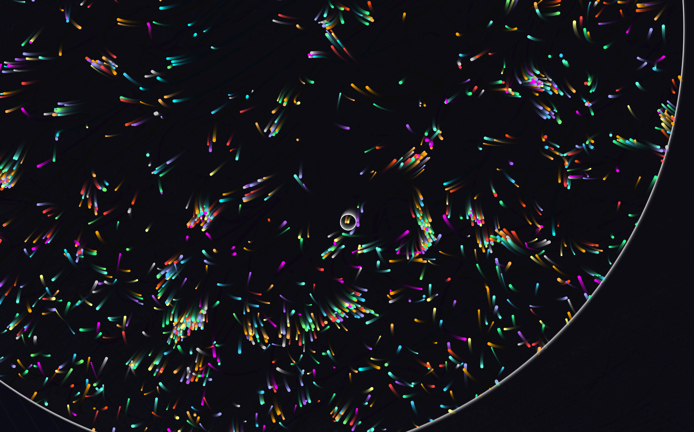

This project is an interactive automata simulator built for the browser. It lets users experiment with emergent behavior, custom rulesets, and realtime visualization.

I wanted to explore emergent systems and build a simulation engine that runs smoothly in the browser. My goal was to support custom rules, thousands of entities, and a fast renderer.
I designed and programmed the entire system from scratch, including the rule parser, rendering engine, and UI. The simulation logic and render optimizations where made from scratch.

The project evolved through several prototypes, and expanded into a modular rendering engine. Most time was spent optimizing the canvas updates and creating a renderer that could handle large worlds without slowing down.
The simulator runs efficiently even with huge grids, and supports custom rules. It's become a great sandbox for testing ideas and visualizing complex systems.
